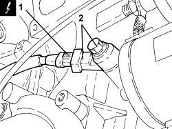

5510C44 DETONATION SENSOR (ONE) - R+R
- Path
- Procedures > 55 ELECTRICAL EQUIPMENT > 5510 ENGINE IGNITION > 5510C COIL, ECU, SENSORS > 5510C44 DETONATION SENSOR (ONE) - R+R
- Kind
- repair procedure (removal / refitting; the operation number is the code)
- Applies to
- engines: 3.2 JTS; all production periods
- Interactive page
- https://sloeber94.github.io/elrnDB-aBrrSpdr/en/#/946002354
Applies to: engines: 3.2 JTS; all production periods
 Removing
Removing
 Refitting
RefittingOp. 1080B92 LEFT UPPER LAMBDA SENSOR - R.R.
Op. 7055B54 UNDER ENGINE PROTECTION/GUARD - R.R.
Op. 1072C40 LEFT EXHAUST MANIFOLD HEAT SHIELD - R.R.
Op. 1084A16 OIL DIPSTICK PIPE - R.R
Op. 1072C30 LEFT EXHAUST MANIFOLD - R + R AND REPLACE GASKET
1. Disconnect the electrical connection for the knock sensor.
Description | Connector | |
|---|---|---|
1 | Detonation sensor |
2. Undo the bolt and remove the detonation sensor from the crankcase, left side.

Applies to: engines: 3.2 JTS; all production periods
Refitting
Removing- Position the detonation sensor in its housing on the crankcase, left side and secure it tightening the bolt to the recommended torque.
Component | Fastening | dia | Value (daNm) | Validity |
|---|---|---|---|---|
Knock sensor | Bolt | - | 2.3 | 3.2 JTS |
- Connect the electrical connection for the detonation sensor.
Op. 1072C30 LEFT EXHAUST MANIFOLD - R + R AND REPLACE GASKET
Op. 1084A16 OIL DIPSTICK PIPE - R.R
Op. 1072C40 LEFT EXHAUST MANIFOLD HEAT SHIELD - R.R.
Topics linked from this page (6)
- 1072C30 LEFT EXHAUST MANIFOLD - R + R AND REPLACE GASKET
- 1072C40 LEFT EXHAUST MANIFOLD HEAT SHIELD - R.R.
- 1080B92 LEFT UPPER LAMBDA SENSOR - R.R.
- 1084A16 OIL DIPSTICK PIPE - R.R
- 7055B54 UNDER ENGINE PROTECTION/GUARD - R.R.
- K050 DETONATION SENSOR